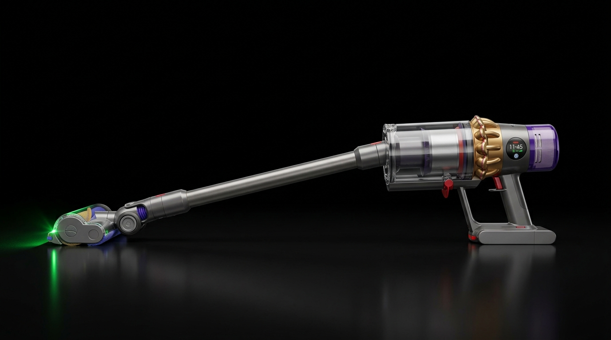

Dyson V15 Detect Teknik Servis Dünyası

⚠️ Sık Yaşanan Kronik Sorunlar
Yüksek Tork Gücü Altında Erken Pil Aşınması: V15 modelinin sunduğu 240 AW emiş gücü, özellikle halı ve yoğun zemin modlarında bataryadan aşırı deşarj akımı çeker. Bu durum lityum pillerin iç direncini artırarak kullanım süresini hızla düşürür.
Lazer Slim Fluffy Başlık Bağlantı Sorunu: Zemindeki mikro tozları gösteren lazer ışıklı başlığın içindeki elektronik hatlar veya ana gövdedeki p pimleri zamanla aşınır. Başlık dönse bile lazer ışığı kesilebilir veya tamamen durabilir.
LCD Ekran Kilitlenmeleri ve İletişim Hatası: Akıllı anakart ile batarya bloğu arasındaki veri yolu (Data hattı) temassızlık yaptığında ekran kilitlenir veya batarya tamamen dolu olsa bile cihaz çalışmayı reddeder.
🛠️ Profesyonel Servis Çözümleri
Premium Hücre Yenileme Teknolojisi: V15'in fabrikasyon pillerini sökerek, yerine bu yüksek tork akımını rahatça karşılayabilen, yeni nesil ve yüksek deşarj oranına sahip orijinal pillerin punta kaynakla montajını yapıyoruz.
Akıllı BMS Anakart Resetleme: Hücre değişimi bittikten sonra kilitlenen veya ekranda uyarı veren gelişmiş V15 akıllı batarya devresini arıza tespit yazılımlarımızla sıfırlayarak sisteme entegre ediyoruz.
Başlık Elektrik Yolu & Tetik Revizyonu: Lazer başlığa akım ileten dahili flex kabloları ve ana gövdedeki tetik switch mekanizmasını güçlendirilmiş yedek parçalarla onarıyoruz.
Dyson V15 Detect Süpürgenizde Güç Veya Batarya Sorunu mu Var?
İstanbul genelinde 0-24 saatte hızlı arıza teşhisi sunuyoruz. Hemen bizimle iletişime geçin.
Arıza Bildirimi Oluştur